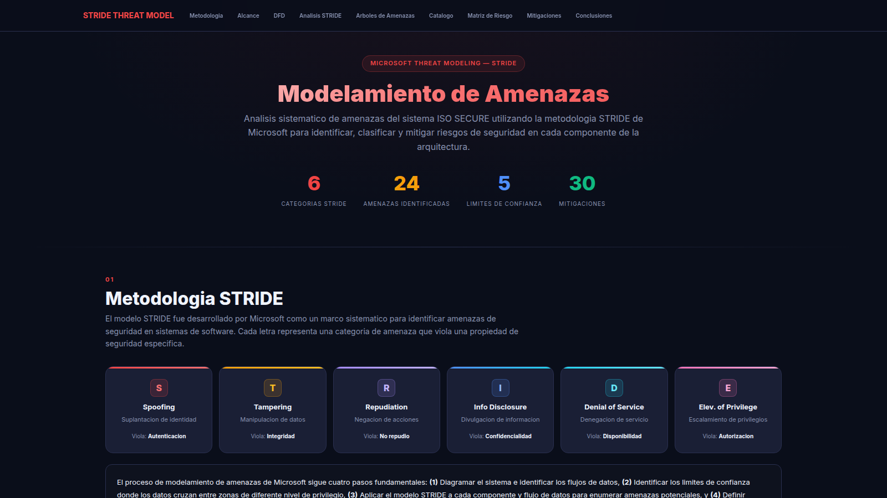
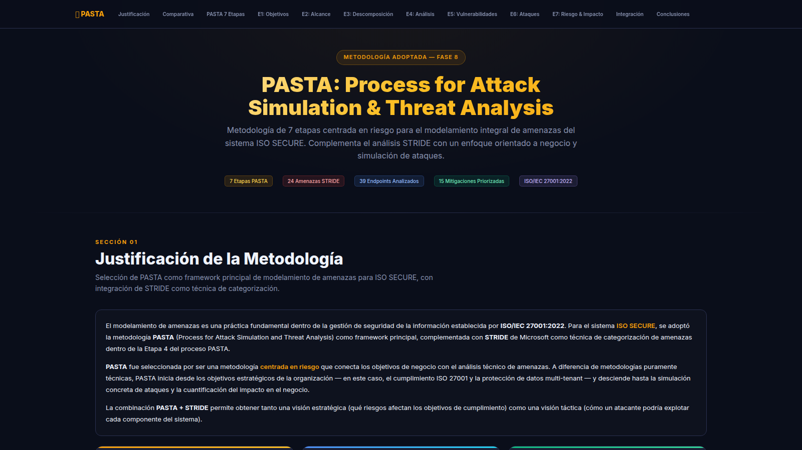
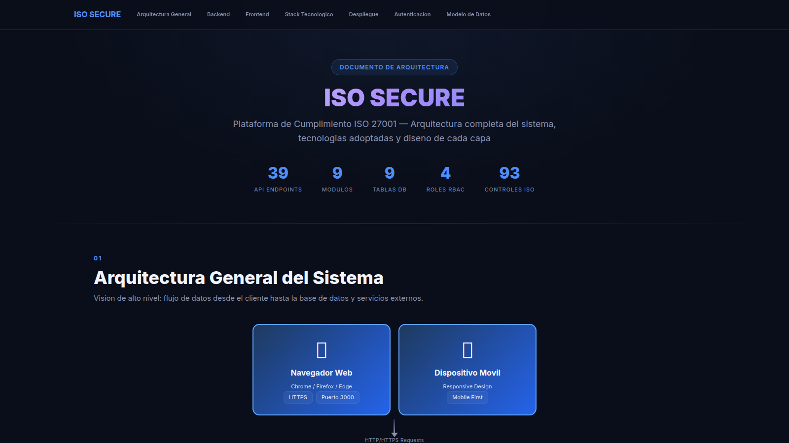
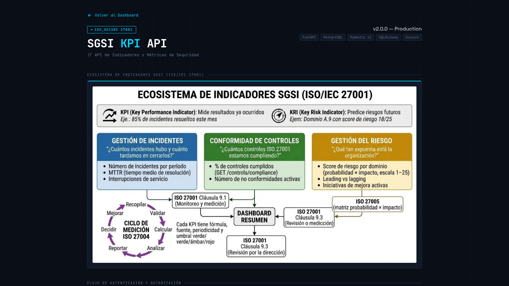

Plataforma web para gestionar el Sistema de Gestión de Seguridad de la Información (SGSI) conforme a ISO/IEC 27001:2022. Multi-tenant, con 4 roles y 9 módulos operacionales.
Static Application Security Testing
Dynamic Application Security Testing
Ambos son obligatorios. Detectan cosas distintas.
Proxy interceptor + spider + scan activo con cientos de payloads. El "todo en uno" del DAST.
Ejecuta plantillas YAML mantenidas por la comunidad. Una plantilla = una vulnerabilidad o misconfig.
Detecta y explota automáticamente todos los tipos de SQL injection: error-based, blind, time-based.
Auditoría completa de TLS: protocolos, suites de cifrado, certificados y CVEs conocidos.
Fuzzer web ultrarápido. Descubre endpoints y parámetros ocultos con miles de peticiones.
Toolkit específico para JWT: firma débil, alg=none, kid traversal, falsificación.
No se ataca todo de golpe. Se avanza por capas, cada una asumiendo más conocimiento del sistema.
Sin login. Lo que un atacante anónimo ve.
Atacar el login.
Con cuenta válida de bajo privilegio.
Peticiones masivas con datos absurdos.
| ID | Hallazgo | Severidad | Mitigación aplicada |
|---|---|---|---|
| D-10 | JWT alg=none aceptado | CRÍTICA | Validación contra Supabase /auth/v1/user |
| D-11 | IDOR en /incidents/{id} | CRÍTICA | Verificación de ownership en service layer |
| D-12 | Bypass cross-tenant via parámetro | CRÍTICA | Helper _empresa_filter infiere del JWT |
| D-01 | Cookies sin HttpOnly/Secure | ALTA | HttpOnly + Secure + SameSite=Lax |
| D-02 | CORS demasiado permisivo (*) | ALTA | Whitelist explícita por entorno |
| D-07 | TLS 1.0 / 1.1 habilitado | ALTA | Solo TLS 1.2+ (ideal 1.3) |
| D-09 | Brute force sin lockout | ALTA | Rate limit Nginx + lockout Supabase |
| D-13 | SSRF en webhooks n8n | ALTA | Allowlist de hosts salientes |
| D-15 | Falta de rate limit global | ALTA | slowapi + Nginx limit_req |
| D-03 | Cabeceras de seguridad faltantes | MEDIA | Nginx con CSP, HSTS, X-Frame, X-Content-Type |
| D-04 | Stack traces en producción | MEDIA | DEBUG=False + handler genérico |
DAST encuentra el problema. El hardening lo previene. Endurecimos cada capa de la pila.
Aquí se ganan o pierden la mayoría de los puntos en una auditoría DAST.
# nginx.conf — extracto real add_header Strict-Transport-Security "max-age=31536000; includeSubDomains; preload" always; add_header X-Content-Type-Options "nosniff" always; add_header X-Frame-Options "DENY" always; add_header Referrer-Policy "strict-origin-when-cross-origin" always; add_header Permissions-Policy "geolocation=(), microphone=(), camera=()" always; add_header Content-Security-Policy "default-src 'self'; script-src 'self' 'unsafe-inline'; connect-src 'self' https://*.supabase.co; frame-ancestors 'none';" always; # Ocultar versión del servidor server_tokens off;
git push origin main → Coolify detecta → build → healthcheck → swap → URL viva
Por bien que esté todo, hay que asumir que un día algo falla. Plan documentado con SLA por severidad.
Brecha activa · indisponibilidad total · fuga de datos
Vuln explotable confirmada · degradación severa
Vuln sin exploit público · función no crítica caída
Hardening pendiente · hallazgo informativo
La Etapa 4 cubre técnicamente estos controles del Anexo A.
| Control | Cubierto por |
|---|---|
| A.5.24-A.5.28 | Procedimiento IR + SLAs |
| A.5.30 | PITR + RPO 1h / RTO 2h |
| A.8.7 | Trivy en CI |
| A.8.8 | DAST ZAP + Nuclei |
| A.8.9 | Coolify + vault |
| A.8.13 | Backup diario + PITR |
| A.8.15 | Logs JSON · 90d retención |
| Control | Cubierto por |
|---|---|
| A.8.16 | Prometheus + alertas |
| A.8.20 | TLS 1.3 + ufw + rate limit |
| A.8.23 | CSP estricto + CORS allowlist |
| A.8.24 | TLS 1.3 + JWT RS256 |
| A.8.26 | DAST como gate de release |
| A.8.27 | Hardening por capa |
| A.8.29 | DAST automatizado |
~14 controles del Anexo A cubiertos sólo en esta etapa.
Las páginas de documentación están desplegadas y son públicas. Capturas reales del sitio:



